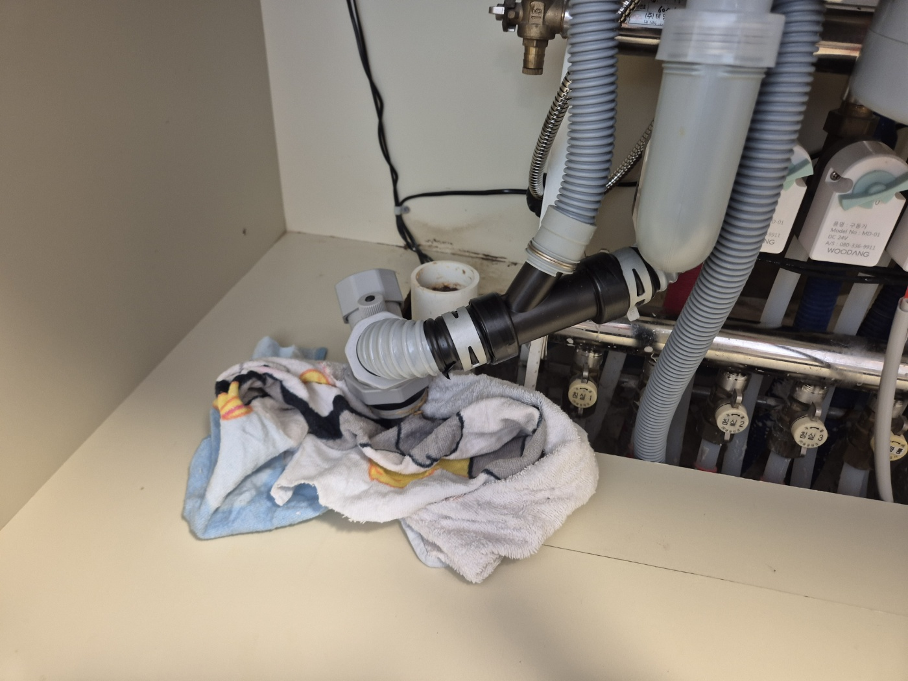
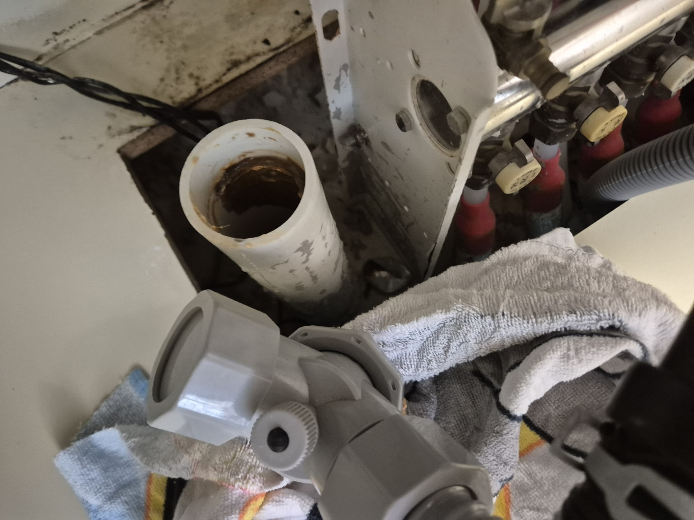
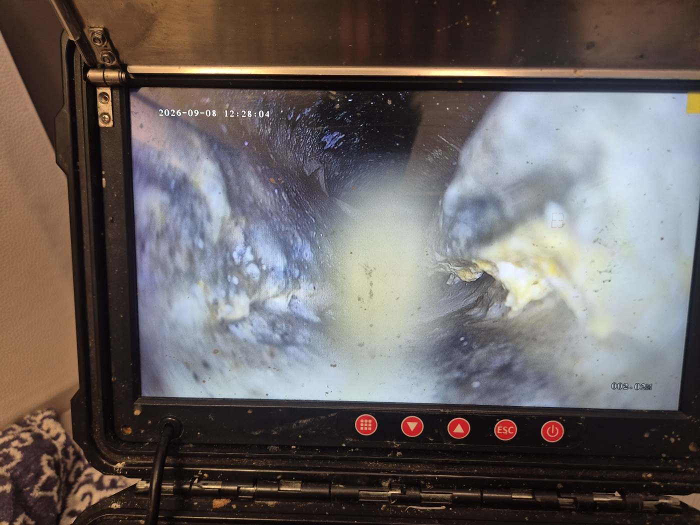
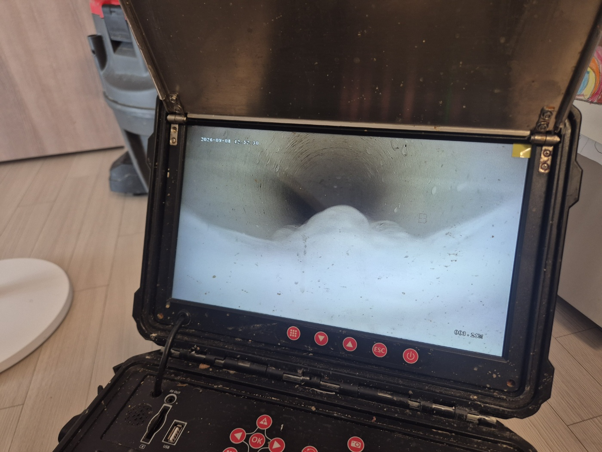

안녕하세요.. 고고고 설비입니다.. 오늘은 평택시 고덕에 있는 아파트에서 싱크대막힘 신고를 받고 다녀온 현장입니다. 며칠 전부터 배수가 느려지더니 오늘은 설거지물이 아예 고여버렸다고 하셨어요.
싱크대 하부장 문을 열어 배관 연결부부터 분리해봤습니다. 좁은 하부장 안쪽에 몸을 낮추고 들어가야 해서 작업이 쉽지만은 않았는데, 연결부를 풀자마자 배관 안쪽 냄새가 확 올라오더라고요.
분리한 배관 안쪽을 랜턴으로 비춰보니 갈색으로 찌든 이물질이 관 벽을 따라 두껍게 붙어있었습니다.. 오랫동안 눌어붙어서 손으로 살짝 긁어봐도 잘 떨어지지 않을 정도로 딱딱하게 굳어있었어요.

육안으로 확인한 것보다 더 깊은 구간까지 살펴보려고 내시경 카메라를 배관 안쪽으로 넣었습니다. 화면이 뿌옇게 흐려질 정도로 이물질이 가득한 게 확인됐고, 카메라를 조금씩 밀어 넣을 때마다 이물질 덩어리가 부딪히는 게 느껴졌어요.

확인된 지점부터 이물질을 조금씩 걷어내며 배관 안쪽을 반복해서 세척했습니다. 한 번에 다 뚫리는 느낌은 아니라서 넣었다 빼기를 여러 번 반복했어요.

작업을 마치고 물을 내려보니 배수가 정상적으로 시원하게 빠지는 걸 확인했습니다. 배관을 다시 조립하기 전에 연결부 패킹 상태도 함께 점검해서 헐거워진 부분은 새로 조여주고, 낡은 패킹은 교체했어요.
아파트는 세대별 배관이 서로 이어져 있는 경우가 많아서, 한 집에서만 관리를 잘해도 옆 세대 배관 상태에 영향을 받는 경우가 종종 있습니다. 싱크대 배관은 기름때가 눈에 안 보이는 곳부터 서서히 쌓이는 경우가 많으니, 배수가 조금이라도 느려지는 초기 신호가 있을 때 미리 점검받으시는 걸 권해드립니다.
고고고 설비는 주택, 아파트, 원룸, 상가, 공장의 생활 하수 오수 배관을 관리해 주는 업체입니다. 고고고 설비에 전화 주시면 친절상담 정확한 진단 확실한 해결로 보답해 드리겠습니다!!